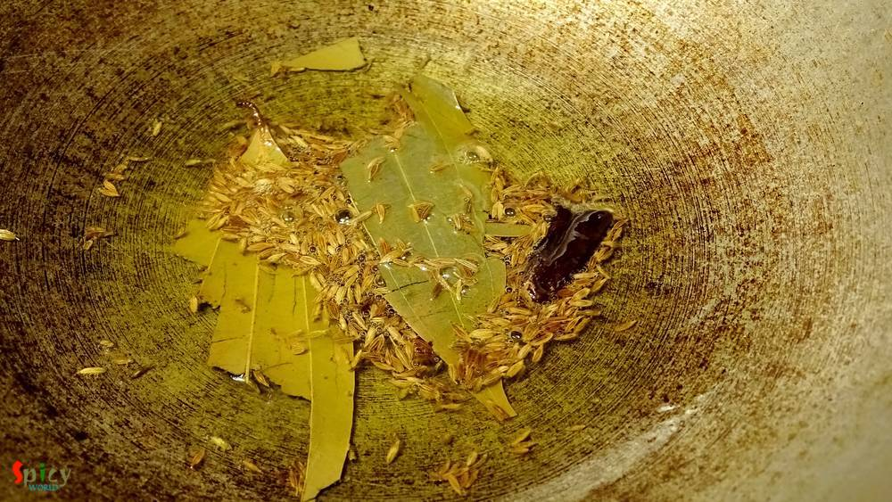
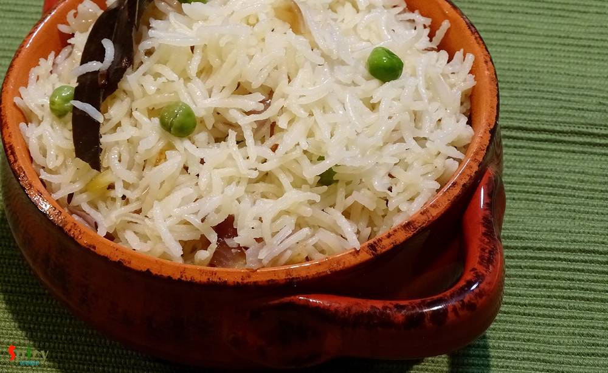

Simple and Easy Recipes
Jeera Rice / Jeera Pulao
© 2016 Spicy World, Published on: Feb 8, 2016
I am a big fan of different types of 'pulao'. One of my favorite pulao is 'Jeera Rice' because of it's saltiness and spicyness. It goes very well with many types of veg and non veg curry. The recipe is very simple and easy. You can also give 'jeera rice' in any adult's lunch box with dry curry, every combo will become great. Try this in your kitchen and let me know how it turns out.

Ingredients
- 1 cup of basmati rice.
- 2 Teaspoons of cumin seeds.
- 1 dry red chilli.
- 1 bay leaf.
- 2 green chilies.
- Salt.
- 2 Teaspoons of white oil.
- 1 Teaspoon of ghee.
- Some green peas.
- Water / Vegetable stock.
- Half cup of chopped onion.

Steps
Heat oil and ghee in a pan.
Add bay leaf, cumin seeds and dry red chilli in hot oil. Saute for 25 seconds.

Then add chopped onion with pinch of salt. Fry it till become translucent.
Then add the washed basmati rice. Mix gently for 3-4 minutes in high flame.
Add 2 cups of vegetable stock or water, enough salt, some green peas and green chilies.
First bring the heat to high and wait for the water to boil.
After that bring the heat to low, cover the pan and cook for 15 minutes.
Turn off the heat and do not remove the lid for another 10 minutes.
After that fold the rice very gently with your spatula once and then serve.

Your jeera rice is ready ...
Enjoy this hot with any type of gravy ...
")